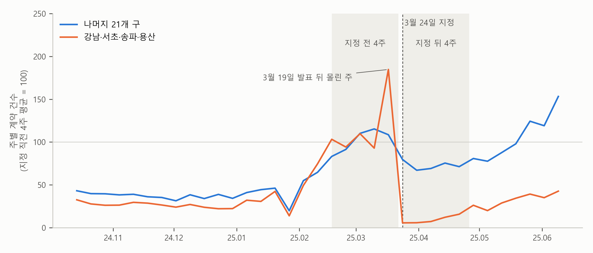

1. 보고서 — 토지거래허가구역은 거래를 얼마나 줄였나#
이번 장의 주제는 이중차분(difference-in-differences)입니다. 어떤 일이 한쪽에만 일어났을 때, 그 일을 겪은 쪽과 겪지 않은 쪽이 그 전후로 어떻게 달라졌는지를 비교해 그 일의 효과를 따지는 방법입니다. 한 지역만 최저임금을 올렸을 때 그 지역의 고용이 어떻게 달라졌는지, 한 도시만 버스 노선을 바꿨을 때 버스 이용객이 늘었는지, 몇몇 학교만 무상급식을 시작했을 때 학생들의 결석이 줄었는지를 물을 때 씁니다. 기업도 같은 질문을 합니다. 몇몇 매장에만 새 진열 방식을 도입했다면, 그 매장들의 매출이 다른 매장들보다 얼마나 더 늘었는지를 보면 됩니다. 정책이 무엇을 바꿨는지 따지는 연구에서 가장 많이 쓰이는 방법 가운데 하나입니다.
예전에는 이 분석을 직접 배워 직접 돌려야 했습니다. 요즘은 AI에게 데이터를 넣어 주고 분석해 달라고 하면 금방 해줍니다. 우리는 AI가 만들어 준 보고서를 잘 이해하고, 잘 점검하면 됩니다. AI가 해 주는 것, 잘 이해하기. 그게 우리의 일입니다.
인과 장은 실험이 없을 때 쓰는 여러 방법을 하나의 지도로 펼쳐 보였습니다. 이중차분은 그 지도의 한 칸이었습니다. 이번 장은 그 칸을 자세히 채웁니다. 이번 장의 예시는 토지거래허가구역 지정과 아파트 거래입니다. 어떤 구의 아파트를 토지거래허가구역으로 묶으면, 그 구의 아파트 매매 계약이 얼마나 줄어드는가 하는 질문입니다.
데이터 — 서울 25개 구의 계약 건수#
토지거래허가구역은 땅값이나 집값이 크게 오를 우려가 있는 곳에서 거래를 미리 허가받게 하는 제도입니다. 이 구역의 아파트를 사려면 계약 전에 구청의 허가를 받아야 하고, 산 집에 2년 동안 직접 살아야 합니다. 전세를 끼고 집을 사 두는 것을 막는 장치입니다. 이번 장의 자료 기간에 서울에서는 이 구역을 두고 큰 일이 세 번 있었습니다.
2025년 2월 13일: 강남구와 송파구에 걸친 잠실·삼성·대치·청담동의 아파트 대부분이 허가구역에서 풀렸습니다. 2020년 6월부터 묶여 있던 곳입니다.
2025년 3월 24일: 강남구·서초구·송파구·용산구의 아파트 전체가 허가구역이 되었습니다(3월 19일 발표). 이번 장의 보고서가 다루는 사건입니다.
2025년 10월 20일: 서울 전역의 아파트가 허가구역이 되었습니다(10월 15일 발표). 앞의 네 구는 이미 지정돼 있었으므로, 이번에는 나머지 21개 구가 새로 묶였습니다. 이 사건은 이 장 끝의 직접 해 보기에서 다룹니다.
데이터는 단순회귀분석 장과 같은 국토교통부 실거래가 공개시스템의 서울 아파트 매매 자료입니다. 이번에는 사건 앞뒤를 넉넉히 보려고 1년치를 두 번 받아 이어 붙였습니다(계약일 2024년 10월 8일 ~ 2025년 10월 7일은 2026년 10월 15일 추출, 2025년 10월 8일 ~ 2026년 10월 7일은 2026년 10월 7일 추출). 수집 과정은 단순회귀분석 장에서 자세히 다뤘고, 이 수집도 AI에게 부탁할 수 있습니다.
이번 장에서 궁금한 것은 가격이 아니라 계약이 몇 건 맺어졌는가입니다. 그래서 받은 거래 자료에서 계약을 신고한 뒤 해제한 거래를 빼고, 중개거래와 직거래를 모두 구마다 계약일마다 셌습니다. 그렇게 만든 자료는 한 행이 “한 구의 하루”이고, 열은 셋뿐입니다.
계약일: 계약을 맺은 날(2024년 10월 8일 ~ 2026년 10월 6일)
구: 서울의 25개 구
계약건수: 그 구에서 그날 맺은 아파트 매매 계약 건수(계약이 없던 날은 0)
25개 구의 729일이라 18,225행이고, 계약은 모두 13만 8,335건입니다. 이 자료도 이 책의 사이트에서 함께 제공합니다. 날짜는 신고한 날이 아니라 계약한 날입니다. 계약한 날을 기준으로 세야 허가구역 지정 전에 맺은 계약과 지정 뒤에 맺은 계약을 가를 수 있습니다.
허가구역으로 지정되면 거래가 얼마나 줄까#
자, 이제 질문입니다. 어떤 구의 아파트를 토지거래허가구역으로 지정하면, 그 구의 아파트 거래는 얼마나 줄어들까요?
허가를 받아야 하고 2년 동안 직접 살아야 하니 거래가 줄 것이라고 쉽게 짐작할 수 있습니다. 실제로 3월 24일 뒤 네 구의 계약은 크게 줄었습니다. 그런데 그 줄어든 만큼이 모두 지정 때문인지는 따로 따져야 합니다. 같은 때에 서울 전체의 주택 시장도 움직이고 있었기 때문입니다. 지정된 구에서 줄어든 것 가운데 어디까지가 지정 때문이고 어디부터가 그 사이 서울 전체에 일어난 일인지를 가르는 것이 이번 장의 일입니다. 다만 이 장은 지정이라는 정책이 좋은지 나쁜지는 다루지 않습니다. 거래 건수가 얼마나 달라졌는지만 봅니다.
이 질문을 AI에게 맡겨 봤습니다. AI가 이 장의 자료 파일을 열어 분석하게 하고, 3월 24일 지정 전후의 계약 건수를 지정된 네 구와 나머지 21개 구로 나눠 비교하는 1쪽 보고서를 요청했습니다. 그렇게 받은 보고서가 아래에 있습니다. 먼저 한 번 읽어 보세요. 대역, 두 번 빼기, 지정 직전 = 100처럼 처음 보는 말이 나와도 괜찮습니다. 그 말들을 읽을 수 있게 만드는 것이 이 장의 일입니다.
AI가 만든 1쪽 보고서
토지거래허가구역 지정은 아파트 거래를 얼마나 줄였나 — 2025년 3월 강남·서초·송파·용산 지정의 이중차분
분석 대상: 서울 아파트 매매 계약(해제된 거래 제외), 지정 전 4주와 지정 뒤 4주 · 자료: 국토교통부 실거래가 공개시스템 · 사건: 2025년 3월 19일 발표, 3월 24일부터 강남·서초·송파·용산구 아파트 전체가 토지거래허가구역
요약
지정 뒤 4주 동안 강남·서초·송파·용산의 계약은 지정 직전 4주의 8% 수준으로 줄었다(주 평균 642건 → 49건).
같은 기간 나머지 21개 구도 73% 수준으로 줄었다. 4개 구가 지정되지 않았다면 21개 구처럼 움직였으리라고 보면, 지정 뒤 4개 구의 계약은 지정이 없었을 때의 약 10분의 1이다.
이것은 계약 건수의 변화다. 가격에 미친 효과나 정책의 좋고 나쁨을 말하지 않는다.

그림. 주별 아파트 매매 계약 건수. 두 그룹 모두 지정 직전 4주의 평균을 100으로 맞췄다. 회색 띠가 비교한 두 기간이다.
추정 결과
지정 전 4주 (주 평균) |
지정 뒤 4주 (주 평균) |
지정 직전 = 100 |
|
|---|---|---|---|
나머지 21개 구 (비교 상대) |
1,578 |
1,148 |
73 |
강남·서초·송파·용산 (처치) |
642 |
49 |
8 |
4개 구, 지정이 없었다면 |
73 |
주: 지정 전 4주는 2월 17일 ~ 3월 16일(발표 뒤 계약이 몰린 3월 17일 주는 뺐다), 지정 뒤 4주는 3월 24일 ~ 4월 20일. 계약일 기준, 중개거래와 직거래 모두. 회귀식(구 × 주 계약 건수의 포아송 회귀, 구마다 절편, 처치 × 지정 뒤 상호작용)으로 추정해도 같은 크기다 — 지정이 없었을 때의 0.105배(95% 신뢰구간 0.08 ~ 0.14, 구 단위 군집 표준오차, 25개 구 × 8주).
해석
4개 구만 보면 — 지정 전후로 계약이 8% 수준이 됐지만, 이 줄어든 몫이 모두 지정 때문은 아니다. 같은 때에 서울 전체의 거래도 줄었다.
두 번 빼기 — 나머지 21개 구가 줄어든 만큼(100 → 73)을 4개 구의 “지정이 없었다면”으로 삼는다. 실제(8)를 그것(73)과 비교하면 약 10분의 1이 남는다. 이렇게 처치 그룹의 변화에서 비교 상대의 변화를 한 번 더 빼는 방법을 이중차분이라고 한다.
비교 상대 — 그림에서 10월 ~ 1월에는 두 그룹의 계약이 비슷하게 오르내렸다. 21개 구가 4개 구의 “지정이 없었다면”을 대신할 만하다는 근거다. 다만 2월 13일 일부 동의 해제를 앞뒤로 4개 구가 더 빨리 늘어, 지정 직전 4주의 4개 구는 평소보다 부풀어 있었다.
한계
지정이 없었다면 4개 구도 21개 구처럼 움직였으리라는 가정 위의 숫자다. 지정 전에 비슷하게 움직였다는 것은 근거일 뿐 증명이 아니다.
21개 구도 지정의 영향을 받았을 수 있다(4개 구에서 밀려난 수요). 그렇다면 비교 상대가 함께 움직여 숫자가 달라진다.
허가 절차 때문에 계약이 뒤로 밀린 몫이 섞여 있다. 지정 뒤 4개 구의 계약은 주마다 조금씩 늘었다.
보고서 내려받기: PDF(그림 포함) · 원문(.md)
보고서의 다섯 부분#
보고서는 다른 장의 보고서와 같이 다섯 부분으로 되어 있습니다. 요약, 그림, 추정 결과, 해석, 그리고 한계입니다.
요약은 세 줄입니다. 첫 줄은 지정 뒤 4주 동안 네 구의 계약이 지정 직전 4주의 8% 수준으로 줄었다는 것입니다. 둘째 줄은 같은 기간에 나머지 21개 구도 73% 수준으로 줄었고, 그것을 감안하면 지정 뒤 네 구의 계약은 지정이 없었을 때의 약 10분의 1이라는 것입니다. 같은 자료에서 8%와 10분의 1이라는 두 숫자가 나왔는데, 무엇과 비교했느냐가 다릅니다. 셋째 줄은 이 숫자가 말하지 않는 것을 적었습니다.
그림은 2024년 10월부터 2025년 6월까지의 주별 계약 건수를 두 선으로 그렸습니다. 두 그룹 모두 지정 직전 4주의 평균을 100으로 맞췄고, 회색 띠 두 개가 비교한 두 기간입니다. 3월 24일 세로선에서 주황 선(네 구)은 바닥으로 떨어지고, 파란 선(21개 구)은 조금 내려앉습니다. 그 직전 주에 주황 선이 크게 솟은 것도 눈에 띕니다.
추정 결과는 2 × 2 표입니다. 행은 두 그룹, 열은 지정 전 4주와 지정 뒤 4주의 주 평균, 그리고 지정 직전 = 100으로 맞춘 값입니다. 마지막 행 “4개 구, 지정이 없었다면”이 이 표의 핵심입니다. 실제로는 관측할 수 없는 줄인데 숫자가 들어 있습니다. 표 아래 주에는 같은 효과를 회귀식으로 추정한 결과가 한 줄로 적혀 있습니다.
해석은 네 구만 본 전후 변화, 두 번 빼기, 그리고 비교 상대인 21개 구가 지정 전에 네 구와 어떻게 움직였는지의 순서로 되어 있습니다. 한계는 세 줄입니다. 첫 줄은 이 숫자가 서 있는 가정이고, 둘째와 셋째 줄은 비교 상대도 영향을 받았을 가능성과 허가 절차로 계약이 뒤로 밀린 몫입니다.
이 장의 진행 순서#
다음 세 절이 이 보고서를 한 부분씩 설명합니다.
변화로 비교하기 — 네 구의 전후만 보면 무엇이 섞이는가. 비교 상대가 그동안 변한 만큼을 빌려 “지정이 없었다면”을 어떻게 세우는가. 크기가 다른 두 그룹은 왜 100으로 맞추는가. 요약의 첫 두 줄과 추정 결과 표.
나란히 움직였을까 — 대역이 맞으려면 무엇이 필요한가. 지정 전 다섯 달 동안 두 그룹은 나란히 움직였는가, 그리고 2월에는 무슨 일이 있었는가. 지정 뒤 4주라는 숫자는 어떻게 읽는가. 그림, 해석의 셋째 줄, 한계의 세 줄.
정답이 있는 예 — 나란히 움직이지 않으면 답은 얼마나 빗나가는가. 인과 장의 일자리 제공 프로그램 자료로 정답과 맞대 보기, 그리고 이 장을 마치며.
세 절을 지나면 이 보고서의 모든 줄을 이해할 수 있습니다. 그리고 여러분이 자기 자료로 같은 분석을 요청할 때, 이 보고서가 본보기가 될 것입니다.